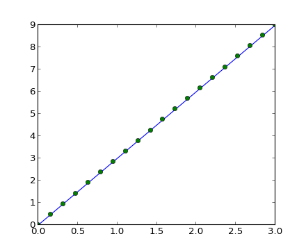
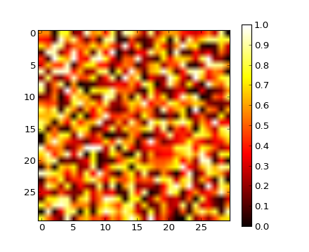
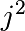

1.3.1. The numpy array object¶
Section contents
1.3.1.1. What are Numpy and numpy arrays¶
Python has built-in:
- containers: lists (costless insertion and append), dictionaries (fast lookup)
- high-level number objects: integers, floating point
Numpy is:
- extension package to Python for multi-dimensional arrays
- closer to hardware (efficiency)
- designed for scientific computation (convenience)
>>> import numpy as np
>>> a = np.array([0, 1, 2, 3])
>>> a
array([0, 1, 2, 3])
For example:
An array containing:
- values of an experiment/simulation at discrete time steps
- signal recorded by a measurement device, e.g. sound wave
- pixels of an image, grey-level or colour
- 3-D data measured at different X-Y-Z positions, e.g. MRI scan
- ...
Why it is useful: Memory-efficient container that provides fast numerical operations.
In [1]: l = range(1000)
In [2]: %timeit [i**2 for i in l]
1000 loops, best of 3: 403 us per loop
In [3]: a = np.arange(1000)
In [4]: %timeit a**2
100000 loops, best of 3: 12.7 us per loop
1.3.1.2. Reference documentation¶
On the web: http://docs.scipy.org/
Interactive help:
>>> help(np.array) Help on built-in function array in module numpy.core.multiarray: array(...) array(object, dtype=None, copy=True, order=None, subok=False, ... ...
In [5]: np.array? String Form:<built-in function array> Docstring: array(object, dtype=None, copy=True, order=None, subok=False, ndmin=0, ... ...
Looking for something:
>>> np.lookfor('create array') Search results for 'create array' --------------------------------- numpy.array Create an array. numpy.memmap Create a memory-map to an array stored in a *binary* file on disk. ...
In [6]: np.con*? np.concatenate np.conj np.conjugate np.convolve
1.3.1.3. Creating arrays¶
1-D:
>>> a = np.array([0, 1, 2, 3])
>>> a
array([0, 1, 2, 3])
>>> a.ndim
1
>>> a.shape
(4,)
>>> len(a)
4
2-D, 3-D, ...:
>>> b = np.array([[0, 1, 2], [3, 4, 5]]) # 2 x 3 array
>>> b
array([[0, 1, 2],
[3, 4, 5]])
>>> b.ndim
2
>>> b.shape
(2, 3)
>>> len(b) # returns the size of the first dimension
2
>>> c = np.array([[[1], [2]], [[3], [4]]])
>>> c
array([[[1],
[2]],
[[3],
[4]]])
>>> c.shape
(2, 2, 1)
In practice, we rarely enter items one by one...
Evenly spaced:
>>> import numpy as np >>> a = np.arange(10) # 0 .. n-1 (!) >>> a array([0, 1, 2, 3, 4, 5, 6, 7, 8, 9]) >>> b = np.arange(1, 9, 2) # start, end (exlusive), step >>> b array([1, 3, 5, 7])
or by number of points:
>>> c = np.linspace(0, 1, 6) # start, end, num-points >>> c array([ 0. , 0.2, 0.4, 0.6, 0.8, 1. ]) >>> d = np.linspace(0, 1, 5, endpoint=False) >>> d array([ 0. , 0.2, 0.4, 0.6, 0.8])
Common arrays:
>>> a = np.ones((3, 3)) # reminder: (3, 3) is a tuple >>> a array([[ 1., 1., 1.], [ 1., 1., 1.], [ 1., 1., 1.]]) >>> b = np.zeros((2, 2)) >>> b array([[ 0., 0.], [ 0., 0.]]) >>> c = np.eye(3) >>> c array([[ 1., 0., 0.], [ 0., 1., 0.], [ 0., 0., 1.]]) >>> d = np.diag(np.array([1, 2, 3, 4])) >>> d array([[1, 0, 0, 0], [0, 2, 0, 0], [0, 0, 3, 0], [0, 0, 0, 4]])
np.random: random numbers (Mersenne Twister PRNG):
>>> a = np.random.rand(4) # uniform in [0, 1] >>> a array([ 0.95799151, 0.14222247, 0.08777354, 0.51887998]) >>> b = np.random.randn(4) # Gaussian >>> b array([ 0.37544699, -0.11425369, -0.47616538, 1.79664113]) >>> np.random.seed(1234) # Setting the random seed
Exercise: Array creation
Create the following arrays (with correct data types):
[[ 1 1 1 1]
[ 1 1 1 1]
[ 1 1 1 2]
[ 1 6 1 1]]
[[0. 0. 0. 0. 0.]
[2. 0. 0. 0. 0.]
[0. 3. 0. 0. 0.]
[0. 0. 4. 0. 0.]
[0. 0. 0. 5. 0.]
[0. 0. 0. 0. 6.]]
Par on course: 3 statements for each
Hint: Individual array elements can be accessed similarly to a list, e.g. a[1] or a[1, 2].
Hint: Examine the docstring for diag.
Exercise: Tiling for array creation
Skim through the documentation for np.tile, and use this function to construct the array:
[[4 3 4 3 4 3]
[2 1 2 1 2 1]
[4 3 4 3 4 3]
[2 1 2 1 2 1]]
1.3.1.4. Basic data types¶
You may have noticed that, in some instances, array elements are displayed with a trailing dot (e.g. 2. vs 2). This is due to a difference in the data-type used:
>>> a = np.array([1, 2, 3])
>>> a.dtype
dtype('int64')
>>> b = np.array([1., 2., 3.])
>>> b.dtype
dtype('float64')
Different data-types allow us to store data more compactly in memory, but most of the time we simply work with floating point numbers. Note that, in the example above, NumPy auto-detects the data-type from the input.
You can explicitly specify which data-type you want:
>>> c = np.array([1, 2, 3], dtype=float)
>>> c.dtype
dtype('float64')
The default data type is floating point:
>>> a = np.ones((3, 3))
>>> a.dtype
dtype('float64')
There are also other types:
| Complex: | >>> d = np.array([1+2j, 3+4j, 5+6*1j])
>>> d.dtype
dtype('complex128')
|
|---|---|
| Bool: | >>> e = np.array([True, False, False, True])
>>> e.dtype
dtype('bool')
|
| Strings: | >>> f = np.array(['Bonjour', 'Hello', 'Hallo',])
>>> f.dtype # <--- strings containing max. 7 letters
dtype('S7')
|
| Much more: | int32/int64... |
1.3.1.5. Basic visualization¶
Now that we have our first data arrays, we are going to visualize them.
Start by launching IPython in pylab mode:
$ ipython --pylab
Matplotlib is a 2D plotting package. We can import its functions as below:
>>> import matplotlib.pyplot as plt # the tidy way
1D plotting
>>> x = np.linspace(0, 3, 20)
>>> y = np.linspace(0, 9, 20)
>>> plt.plot(x, y) # line plot
[<matplotlib.lines.Line2D object at ...>]
>>> plt.plot(x, y, 'o') # dot plot
[<matplotlib.lines.Line2D object at ...>]
>>> plt.show() # <-- shows the plot (not needed with Ipython)
[source code, hires.png, pdf]
{kind=link}
2D arrays (such as images)
>>> image = np.random.rand(30, 30)
>>> plt.imshow(image, cmap=plt.cm.gray)
<matplotlib.image.AxesImage object at ...>
>>> plt.colorbar()
<matplotlib.colorbar.Colorbar instance at ...>
>>> plt.show()
[source code, hires.png, pdf]
{kind=link}
See also
More in the matplotlib chapter
3D plotting
For 3D visualization, we can use another package: Mayavi. A quick example: start by relaunching iPython with these options: ipython –pylab=wx (or ipython -pylab -wthread in IPython < 0.10).

In [58]: from mayavi import mlab
In [61]: mlab.surf(image)
Out[61]: <enthought.mayavi.modules.surface.Surface object at ...>
In [62]: mlab.axes()
Out[62]: <enthought.mayavi.modules.axes.Axes object at ...>
The mayavi/mlab window that opens is interactive: by clicking on the left mouse button you can rotate the image, zoom with the mouse wheel, etc.
For more information on Mayavi : http://github.enthought.com/mayavi/mayavi
See also
More in the Mayavi chapter
1.3.1.6. Indexing and slicing¶
The items of an array can be accessed and assigned to the same way as other Python sequences (e.g. lists)
>>> a = np.arange(10)
>>> a
array([0, 1, 2, 3, 4, 5, 6, 7, 8, 9])
>>> a[0], a[2], a[-1]
(0, 2, 9)
Warning
Indices begin at 0, like other Python sequences (and C/C++). In contrast, in Fortran or Matlab, indices begin at 1.
For multidimensional arrays, indexes are tuples of integers:
>>> a = np.diag(np.arange(3))
>>> a
array([[0, 0, 0],
[0, 1, 0],
[0, 0, 2]])
>>> a[1, 1]
1
>>> a[2, 1] = 10 # third line, second column
>>> a
array([[ 0, 0, 0],
[ 0, 1, 0],
[ 0, 10, 2]])
>>> a[1]
array([0, 1, 0])
Note that:
- In 2D, the first dimension corresponds to rows, the second to columns.
- for multidimensional a, a[0] is interpreted by taking all elements in the unspecified dimensions.
Slicing Arrays, like other Python sequences can also be sliced:
>>> a = np.arange(10)
>>> a
array([0, 1, 2, 3, 4, 5, 6, 7, 8, 9])
>>> a[2:9:3] # [start:end:step]
array([2, 5, 8])
Note that the last index is not included!
>>> a[:4]
array([0, 1, 2, 3])
All three slice components are not required: by default, start is 0, end is the last and step is 1:
>>> a[1:3]
array([1, 2])
>>> a[::2]
array([0, 2, 4, 6, 8])
>>> a[3:]
array([3, 4, 5, 6, 7, 8, 9])
A small illustrated summary of Numpy indexing and slicing...

1.3.1.7. Copies and views¶
A slicing operation creates a view on the original array, which is just a way of accessing array data. Thus the original array is not copied in memory.
When modifying the view, the original array is modified as well:
>>> a = np.arange(10)
>>> a
array([0, 1, 2, 3, 4, 5, 6, 7, 8, 9])
>>> b = a[::2]; b
array([0, 2, 4, 6, 8])
>>> b[0] = 12
>>> b
array([12, 2, 4, 6, 8])
>>> a # (!)
array([12, 1, 2, 3, 4, 5, 6, 7, 8, 9])
>>> a = np.arange(10)
>>> b = a[::2].copy() # force a copy
>>> b[0] = 12
>>> a
array([0, 1, 2, 3, 4, 5, 6, 7, 8, 9])
This behavior can be surprising at first sight... but it allows to save both memory and time.
Warning
The transpose is a view
As a result, a matrix cannot be made symmetric in-place:
>>> a = np.ones((100, 100))
>>> a += a.T
>>> a
array([[ 2., 2., 2., ..., 2., 2., 2.],
[ 2., 2., 2., ..., 2., 2., 2.],
[ 2., 2., 2., ..., 2., 2., 2.],
...,
[ 3., 3., 3., ..., 2., 2., 2.],
[ 3., 3., 3., ..., 2., 2., 2.],
[ 3., 3., 3., ..., 2., 2., 2.]])
Worked example: Prime number sieve

Compute prime numbers in 0–99, with a sieve
Construct a shape (100,) boolean array is_prime, filled with True in the beginning:
>>> is_prime = np.ones((100,), dtype=bool)
Cross out 0 and 1 which are not primes:
>>> is_prime[:2] = 0
For each integer j starting from 2, cross out its higher multiples:
>>> N_max = int(np.sqrt(len(is_prime))) >>> for j in range(2, N_max): ... is_prime[2*j::j] = False
Skim through help(np.nonzero), and print the prime numbers
Follow-up:
- Move the above code into a script file named prime_sieve.py
- Run it to check it works
- Convert the simple sieve to the sieve of Eratosthenes:
- Skip j which are already known to not be primes
- The first number to cross out is 
1.3.1.8. Adding Axes¶
Indexing with the np.newaxis object allows us to add an axis to an array:
>>> z = np.array([1, 2, 3])
>>> z
array([1, 2, 3])
>>> z[:, np.newaxis]
array([[1],
[2],
[3]])
>>> z[np.newaxis, :]
array([[1, 2, 3]])
1.3.1.9. Fancy indexing¶
Numpy arrays can be indexed with slices, but also with boolean or integer arrays (masks). This method is called fancy indexing. It creates copies not views.
1.3.1.9.1. Using boolean masks¶
>>> np.random.seed(3)
>>> a = np.random.random_integers(0, 20, 15)
>>> a
array([10, 3, 8, 0, 19, 10, 11, 9, 10, 6, 0, 20, 12, 7, 14])
>>> (a % 3 == 0)
array([False, True, False, True, False, False, False, True, False,
True, True, False, True, False, False], dtype=bool)
>>> mask = (a % 3 == 0)
>>> extract_from_a = a[mask] # or, a[a%3==0]
>>> extract_from_a # extract a sub-array with the mask
array([ 3, 0, 9, 6, 0, 12])
Indexing with a mask can be very useful to assign a new value to a sub-array:
>>> a[a % 3 == 0] = -1
>>> a
array([10, -1, 8, -1, 19, 10, 11, -1, 10, -1, -1, 20, -1, 7, 14])
1.3.1.9.2. Indexing with an array of integers¶
>>> a = np.arange(10)
>>> a
array([0, 1, 2, 3, 4, 5, 6, 7, 8, 9])
Indexing can be done with an array of integers, where the same index is repeated several time:
>>> a[[2, 3, 2, 4, 2]] # note: [2, 3, 2, 4, 2] is a Python list
array([2, 3, 2, 4, 2])
New values can be assigned with this kind of indexing:
>>> a[[9, 7]] = -10
>>> a
array([ 0, 1, 2, 3, 4, 5, 6, -10, 8, -10])
When a new array is created by indexing with an array of integers, the new array has the same shape than the array of integers:
>>> a = np.arange(10)
>>> idx = np.array([[3, 4], [9, 7]])
>>> a[idx]
array([[3, 4],
[9, 7]])
>>> b = np.arange(10)
The image below illustrates various fancy indexing applications

We can even use fancy indexing and broadcasting at the same time:
>>> a = np.arange(12).reshape(3,4)
>>> a
array([[ 0, 1, 2, 3],
[ 4, 5, 6, 7],
[ 8, 9, 10, 11]])
>>> i = np.array([[0, 1], [1, 2]])
>>> a[i, 2] # same as a[i, 2*np.ones((2, 2), dtype=int)]
array([[ 2, 6],
[ 6, 10]])